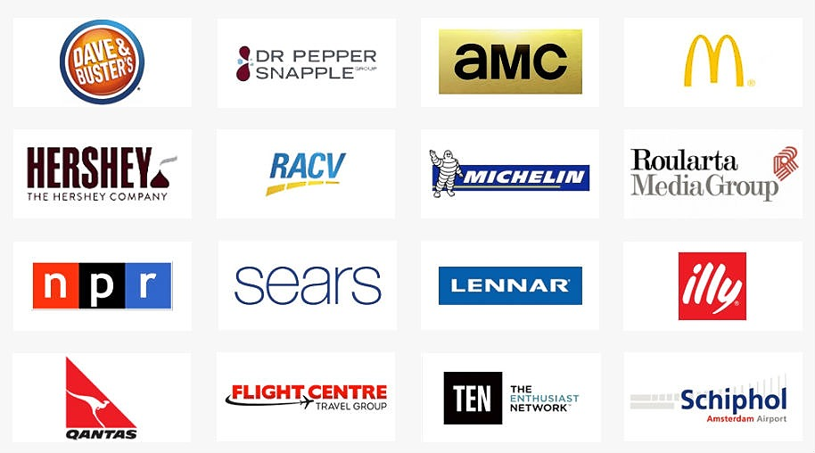
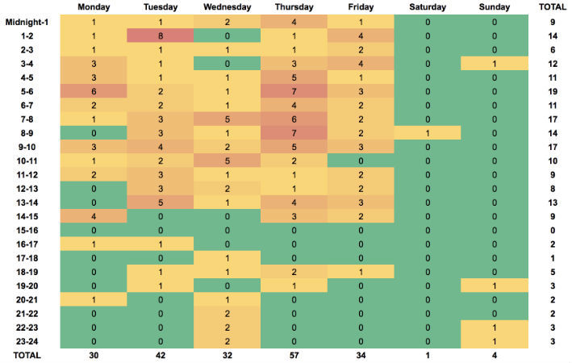
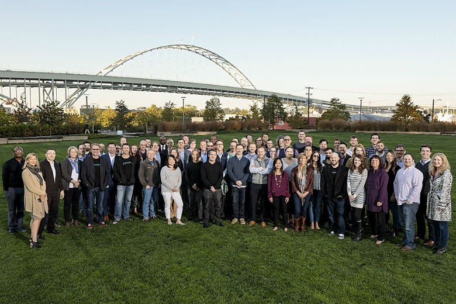
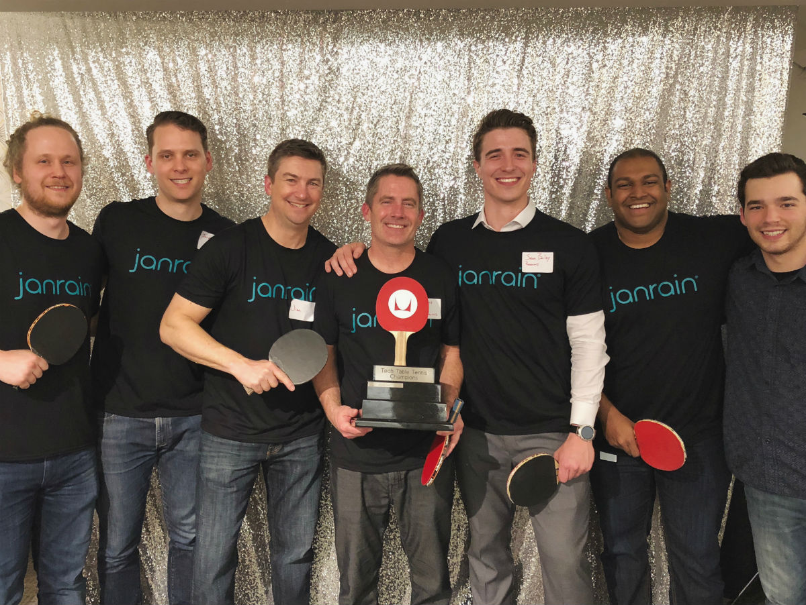
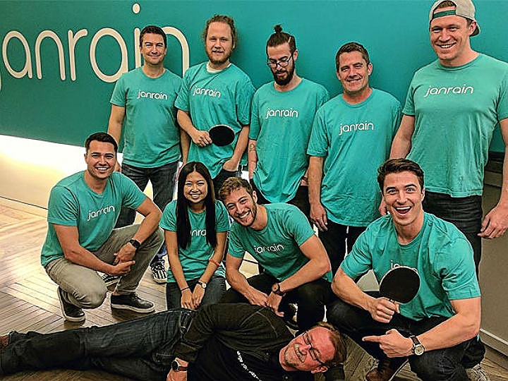
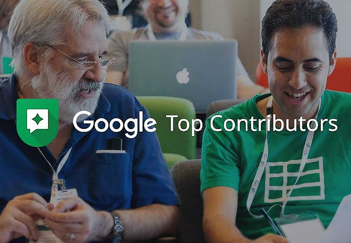
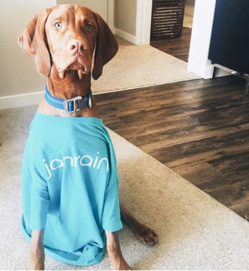
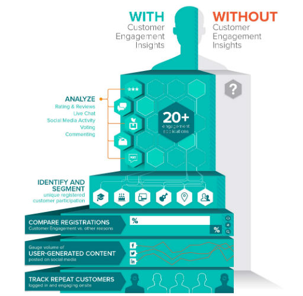

Todd Zabel has been helping customers and building support systems for more than ten years now, and he’s done it at leading companies including Google, Janrain, and TiVo.
Anchoring himself at Google as a Senior Product Support Manager for Chromebooks, he moved into a Community Operations Management role and now runs the entire global support operation for Janrain.
You may not have heard of Janrain before, but they’re one of the fastest growing companies in the Customer Identity and Access Management space. They help many of the leading brands of the world such as Coca-Cola, McDonald’s, Hershey’s, and QANTAS manage their most valuable assets: their customers’ identities.
With such a depth of knowledge within the customer support space, we had a LOT of questions. Specifically:
- How to manage global teams and their KPIs
- How to pitch your ideas to product teams effectively
- How to guarantee premium support coverage
- How to use chatbots - or not :)
Before jumping into our conversation, if you like articles like this, you can also check out our interviews with support leaders at Basecamp, 99designs, and Zendesk. We cover many of the same topics, and it’s exciting to see all the progress everyone is making across different industries.
Without further ado - meet Todd!
Ok - to start with, thanks so much for joining us!
I’m pleased to be invited! :-)
I’m going to launch right in, so maybe first up, let’s start with Janrain – describe the business a little bit.
We’re in the Customer Identity and Access Management space. The typical use case for Janrain is that an end user on a very large website like coca-cola.com, for example, signs in or signs-up using a social login like Facebook, Google, Twitter, Instagram, WeChat, or some other identity provider.
The profile data that comes back from that social provider in addition to anything additional that end user might supply is stored, managed, and protected with Janrain.
Source: Janrain
We then take that end-user data and make it useful for our customer. For example, Coca-Cola – with Janrain, they are able to understand their customers and segments to better meet their needs and customize the experience they have on Coca-Cola-owned web and mobile properties.
So, would you say your target customers are typically more enterprise?
We are definitely selling to the big enterprise players. Large consumer-driven companies really benefit from Janrain’s technology because of the best-in-class security, legal compliance, and tools for customizing the user experience and consuming the aggregate data in a way that drives their business forward.
Ok, great - so as a Customer Support Manager, what would you say are your main goals in supporting clients?
Over time, the goals are different depending on the company’s strategic objectives, the particular challenges customer face, operational factors (costs, staffing allocation, etc.), and the stage the company is at with product/service adoption.
The customer service strategy needs to complement all of these factors to enable growth and ensure the success of each individual customer.
I wouldn’t employ the same support strategy, for example, with a product that was only in the hands of early adopters as I would with a company which already has mainstream consumer product adoption; the needs are different, and the support tactics and strategy have to be customized for those use cases.

Source: Janrain
At Janrain, we have a client roster that is small enough, because we’re selling into enterprise companies, that we can cultivate personal relationships with a small group of technical and business leaders who will work closely with us to deliver a great experience to their end-users.
And how do you gauge satisfaction among these customers?
So, our method for understanding how happy these customers are is primarily to just ask and have an open conversation during weekly meetings, quarterly business reviews, and in the course of ordinary ticket transactions.
A CSAT score from a survey, while helpful in aggregate, doesn’t give us enough color to course correct in situations where we may not be hitting the target from the customer’s point of view.
This is one of the big advantages of being in an enterprise SaaS company versus where I was at with Google. At Google, we had more than a billion users. So, I had very little contact with any individual customer or user, and having conversations with them to understand their experience at a deep-level was more difficult.
Source: Janrain
Our main goal in Technical Support at Janrain is to help the developers, IT Managers, and project managers on the customer-side to be successful and to expand their implementation of Janrain, bringing more value to their business long-term.
Turning issues around really fast and providing in-depth consultative answers rather than simply referring the customer to a knowledge base article or a forum – that’s what we aim for because, ultimately, we don’t want to do anything that will slow down the developers or block the customer from extracting the full value out of their relationship with Janrain.
Then at the end of a month or the end of the quarter, you are kind of like, “How am I doing? How is my team doing?” Are you looking at some kind of qualitative score in terms of how happy they are, plus account expansion?
Yeah - so, every month we report KPIs back to our executive leadership team. For our business today, the KPIs include how many tickets came in, our SLA compliance both for initial response and resolution across different severity and priority levels, our CSAT score, the size of the backlog (how many tickets are we still working on that are unresolved at the end of the month), and our escalation rate to the Engineering team.
Source: Janrain
In our quarterly business reviews (QBR) with our customer, we go much deeper. For example, say we do a QBR with a big customer like a Coca-Cola, I’ll get about half an hour typically to present our data-driven findings and recommendations around their ticket patterns and developer challenges.
The conversation might be focused on how many tickets were about mobile, what countries were tickets coming in from, which of the customer’s teams globally were submitting the most tickets, which people on those teams were submitting the most tickets, were any tickets coming in at the wrong severity level, how much time did it take to resolve different ticket types, and so on.
We essentially want to know how good the service was that we provided to our enterprise customers across many different dimensions so we can continually improve by identifying and tackling any problem areas.
We listen carefully to the customer during these conversations to make sure we have total alignment in terms of business objectives and a solid understanding of their team’s perception of our support program.
I also create Heatmaps for our higher volume customers to show the hourly and daily inflow pattern of tickets. So, for these larger customers who have a high volume of tickets every year because of their broad expansion efforts and cool custom projects with Janrain, I show them graphically the arrival pattern of tickets from their organization by day of the week and hour of the day.
From that, we often see really interesting patterns and are able to learn a lot about the business.

Example Heatmap from Janrain QBR’s.
Sometimes these results come as a surprise to our customers as well, and that always drives a fun and insightful conversation. That is really where the value is in our data-driven program - around those deep dives with the customer where we can learn about one another and work toward 100% alignment as partners.
You mentioned that one of your most important KPIs is around reducing escalations to Engineering. Why is that?
For a company of Janrain’s size (~200 employees) who serves large enterprise and consumer customers, it’s important for us to be efficient. If our internal processes, documentation, training, and hiring programs are not well-controlled, it shifts effort to other teams, such as Engineering, to pick up the slack.

Source: Janrain
Our Engineering team is responsible for delivering on the product roadmap and running our infrastructure. If we escalate tickets to them unnecessarily, it drives up operational costs, but it also represents a big opportunity cost against our company strategy and ultimately would negatively impact our customers who end up waiting longer for new features and technology.
We spend a lot of time reviewing escalations to Engineering at the end of the month to determine whether those escalations were necessary and how we could prevent them in the future by providing additional training or coaching, improving our documentation, or even modifying our hiring profile to extend to new skill sets.
Leaning into that theme of your team’s operations, what do your clients expect in terms of response times? What’s SLA compliance for you?
So, we have a tiered support offering with Bronze, Silver, Gold, and Platinum tiers. Platinum has very fast turnaround times on response (30 minutes) and resolution (4 hours), while Bronze has the slowest.
Our team works directly with developers. Again, we don’t want to do anything that will slow down the development cycle for our customers, so it’s important to coach the customer into a plan that works for their particular business needs.
How do you staff your different tiers? How is it all breaking down among your team?
That is a great question. We have a flat structure today across our Portland, London, and Shanghai support groups.
The teams are very collaborative and are all hired according to a singular technical and customer service profile – we aim to hire talented developers or system administrators who happen to love working directly with customers.

Source: @janrain
This structure has worked very well for us, and if we are in need of more specialized help, we can escalate to our DevOps and Engineering teams who have a higher level of access for debugging and can provide strategic advising around architecture, infrastructure, and more complex technical considerations based on their more intimate knowledge of our core application layers.
Of course, there is also a big risk involved in hiring to this profile; our team members are often poached for core Engineering, Architecture, or DevOps roles after they have proven themselves in Support.
We have sort of accepted this in our business as a good thing for the company, but we have a recommended tenure of one year in support before a Technical Support Engineer moves on within Janrain.
Cultivating this talent and keeping it within the organization is one way that our team helps the overall operation.
From a functional standpoint, we use Jira. All tickets come in through this system, and if a ticket arrives with a high severity level, it hits our PagerDuty system and will route to the region where we have staff working normal business hours for immediate triage.
Source: Janrain
As I mentioned, we are currently staffed in three regions: Portland (Oregon), London, and Shanghai. So, wherever someone is on normal business hours among those three, a ticket is routed there.
Ok, so - when you hire a Technical Support Engineer, what would you expect from them? What would their KPIs be?
We have a set of core responsibilities that are kind of qualitative, and then we have hard metrics.
For the “Core Responsibilities” layer, we talk about being an advocate for the customer and their end users at all times, being very proactive about taking tickets from the queue and looking for languishing or neglected tickets that might be in the backlog, being proactive about looking for any tickets that are misclassified, miscategorized, have incorrect ticket fields, etc., help other team members who are struggling on a ticket, and to take responsibility for training new team members if you happen to have specialized knowledge on a particular topic.
We also ask them to leave documentation better than they found it. So, if a Technical Support Engineer finds a technical article that is deficient in some way in our internal knowledge base, it’s their responsibility to improve it.
Finally, we require that team members treat one another and customers with respect at all times.
Source: Janrain
On the metrics side, we do a QA scorecard exercise every month in addition to measuring raw ticket output, SLA compliance, and CSAT scores.
I have a spreadsheet tool where I give everybody in the team a sample set of tickets from every other Tech Support Engineer. They’re anonymized, and the Tech Support Engineer who is reading them gives it a score based on a variety of dimensions. You have to maintain an 85% compliance rate in that QA process every month in order to stay in good standing.
That is cool. Where did you get that process from? Did you come up with it?
Yes, we developed this process. We are regularly audited, so basically everything I’m telling you and all of the process that I have, I have had vetted by these auditors.
The reason it needs to be so customized for our business is that Janrain is in the business of data privacy and security; there are many regulatory, contractual, and other legal requirements which involve strict protocols for handling customer data.
Ok - sorry, back to the QA scorecard. Does each engineer QA other tickets anonymously, or who does the QA?
It’s a peer-to-peer process. Every engineer is responsible for reading a set of tickets from every other engineer, and I then QA the QA. I spot check a subset of each one of those, and I give it back to the reviewers.

Source: @janrain
In the end, they all get a score for the month, and then they have an aggregate score for the year. If someone is struggling, you can see that trend emerge, and more coaching is provided.
If I can ask, what percent of someone’s conversations get QA’d each month, roughly?
Currently it’s around 10%.
That is a lot.
Yes, this process originated as a way to course correct on some quality issues we were seeing in the past, and we’ve been pretty transparent about the fact that this process won’t scale as we grow.
We will slim it down, possibly in the number of tickets to be reviewed, or make it less frequent or create some other automated QA processes. But right now, it’s working very well to control quality, and we’ve seen a significant impact in overall process compliance and ticket quality.
The broader team also has a goal to hit a hundred percent SLA compliance on initial response.
In order to be able to make sure we are hitting that 100% marker globally, we make it a team goal rather than an individual goal - so we avoid cherry picking tickets to satisfy our personal metrics.
Also, keep in mind that we’re not in the business of sending generic canned responses to our customers; we strive to advance an investigation or otherwise add significant value to every customer interaction if we can. Automated responses do not count toward SLA compliance on our team.
What were some of your KPIs at Google within that team, either for you or for the broader team?
It was really interesting. At least in my history of being at enterprise SaaS companies, you talk a lot about operational efficiency and cost and contact deflections. It’s the exact opposite at Google.
Source: Google
The most interesting thing about the way Google evaluates support, in my experience, is that they did not care very much about cost. Of course, efficiency is good, that is the icing on the cake. But during my time, what they really cared about was true customer satisfaction.
How did they measure that improvement in customer satisfaction?
Different support teams measure success differently at Google. Within their one-to-one channels, which is basically all their call centers globally, they have very standard call center KPIs – occupancy, service level, average handle time.
But the emphasis is totally on the customer experience: is the customer happy? Did we answer their question correctly the first time? Did they have to wait a long time on hold? Did they get transferred? Were we able to answer their question through automation in a way that wasn’t frustrating and didn’t add extra effort to their process of getting a question answered or an issue resolved?
Source: Google
Then you have the Community team where there has been a lot of experimentation with metrics over the years. Figuring out what is the best proxy for support success, not just customer satisfaction scores, but was the issue actually resolved? How many other people benefited from a publicly-posted answer? How discoverable was it? Did they have to jump into another support channel afterward, like a knowledge article or a phone support channel?
People come up with really big ideas on that team that may be expensive, but the leadership’s attitude is:
If you’re going to improve the customer experience and make things easier for them, then let’s do it. Unless we’re talking about some outrageous number, let’s improve it.
Just as an example, customer forums for many companies are really kind of a dumping ground as a deflection tool to get people out of the costly one-to-one channels. If you can send someone over to a forum, you’ve basically saved some money and reduced headcount burden for the organization. That’s not how Google thinks, and I’ll tell you why.
They have people from around the world participate in something called the Top Contributor Program, and they answer questions in the forums for Google’s users.

Source: Google Top Contributor Program
They do it because they love Google, they want to be a part of this exciting program, and they get to use their extensive knowledge of Google’s products to help solve problems for people all over the world.
We were looking at the forums as a management team saying, “Gosh, these folks are amazing. They’re participating in this program so actively. They’re adding so much value, but there are still a lot of questions that aren’t being answered. What can we do?”
The answers that came up would never happen in a lot of larger companies. People in our team would say, “Let’s just send them to one-to-one channels if they don’t get an answer right away,” or “How about we hire people to answer the account-specific questions as well as the issues which require internal subject matter expertise; we really want to achieve a 100% resolution rate.”
Source: Google
That is a very expensive solution, and Google doesn’t need to do that, but Google really cares about the user experience. So, they invested, big time, to hire a lot of people to help answer those questions.
And what’s really amazing about that is seeing how willing Google is to spend money to improve the user experience when they really don’t have to according to conventional wisdom.
There is an altruistic attitude that is pervasive at Google about doing the right thing for the user.
How do you make the case currently to invest in customer support? Say you want another Technical Support Engineer – if you need more dollars from the top, how do you make that case?
You need to be very data-driven. When I came to Janrain, they asked me what my 30, 60, 90-day plan would be, and I said, “In my first 30 days, I’m not going to change anything unless something is exposing us to operational or data privacy risk.
I am going to be measuring and analyzing our support operation at a very deep level and coming up with actionable insights which I will present to the leadership after my first 30 days.” And that is what I did.

Source: @janrain
Going to the executive team with this extensive data and analysis and outlining the insights that I was able to get out of it with a recommendation that was built into a roadmap was a powerful way to help them understand the support business in a new way and to really understand what the challenges were and what we could do as an organization to overcome those challenges.
The outcomes of this data might point to how we can improve the customer experience, how we can improve the product, how we can improve our process, or how we can save money. Any of those things might be an outcome.
I don’t restrict it just to customer experience or simply to operational efficiency. How can we improve this business overall, make it scalable and make ourselves a competitive differentiator in the market?
Do you have any tips for support managers on how to influence a Product team to make products easier to use so that support volume declines?
We used to deliver presentations to new Product Support Managers at Google on this topic because it’s a really hard thing when you have somebody on the business side who is perhaps not particularly technical walk into a room of highly accomplished and technical Product Managers and Engineers and make technical recommendations.
It doesn’t matter how long you have been at Google or what your background is; you have to build credibility with those teams over time, and you do that with data.
Source: Google
For example, if I were presenting to a Google Product team, I might say,
“We received X number of complaints from users in a certain country about a specific feature, and all of those users were running the same operating system, and 75% of them were attempting to execute a specific process at the time that the issue occurred.
After evaluating their qualitative feedback, we thought this was because of root causes A, B, and C. We tested them all using the following method and found this to be true in certain cases, and we have a list of people that we could possibly reach out and talk to them more about their experience to verify whether our analysis is correct.
We can also purchase this hardware or software and run usability tests internally to help shed further light on the issue. We’re happy to do any of these things. We want to get your take first.”
Source: Google
Sometimes the response would be, “Wow, that’s cool. You’ve quantified all that, and it sounds like you’re on the right track. Let us know if you need help in your investigation; we’re happy to allocate an Engineer to this effort.”
Or sometimes the answer would be, “Yes, actually, we know about that issue, and we’re going to fix it. Now we’ll actually prioritize it higher based on the information you’ve provided.”
The idea is to attack user experience problems scientifically and to facilitate collaborative problem solving between customer-facing and development teams.
Over time, you’ll build rapport and credibility with technical teams, which will ultimately be very beneficial to the user/customer experience.
There is this growing dialogue probably more in the marketing world around chatbots and bots for Facebook Messenger. What would be some scenarios where you think automated messaging makes sense?
On our side, in an enterprise SaaS model for Janrain, I just don’t see that it’s a great approach for us – because first:
We really want to have that personal connection with the relatively small number of enterprise customers who reach out to us and we want to cultivate that relationship to build trust and develop a better mutual understanding of the customer’s strategic roadmap.
It’s very important to have their trust so that we can be consultative, help them with solutions, recommend expansion opportunities, and talk them through architectural considerations.
Someday a chatbot will be able to do that, but today I haven’t seen it.
They really don’t have that personal touch yet, or the depth of understanding across the business and technical layers in a way that builds credibility and trust with enterprise clients.
The closest we get to automation with our customer service program at Janrain is simply to serve up relevant knowledge base articles during the ticket creation process.
If we can possibly help a developer to get their answer through self-service and avoid waiting for a ticket response, that’s a good outcome, but we’re equally happy to work directly with them to find the right solution for their particular business.
Every business requires a customized support solution. Metrics which are very meaningful within one business model may not advance company growth/ efficiency objectives for other types of businesses and products.

Source: Janrain
So, I think my advice would be to think really carefully about what the core goals of the company are in relation to its growth stage and map those back to the support operation.
If you can figure out the right operational metrics which will support those company objectives and, from there, back into the processes, policies, hiring profiles, and tools for the support team that drive those metrics up and to the right, you’ll be in a great position to add real value and to be a part of the broader company solution.
Support has not traditionally been the glamour division within tech companies, but I would like to see this change.
From a customer acquisition, retention, and expansion perspective, Support is on the front lines and has tremendous potential to affect positive change within the customer base while leading the way for organizations to truly understand and meet their customers’ needs.
That’s great! Thanks for your time Todd!
Thanks for having me!